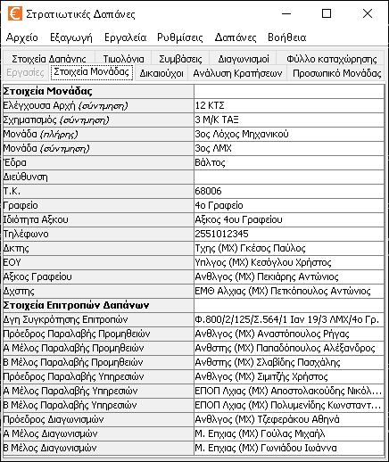

Καρτέλες
Το πρόγραμμα διαθέτει 6 ξεχωριστά παράθυρα που μπορούν να επιλεχτούν από 6 διαφορετικές καρτέλες. Αυτές είναι οι παρακάτω:
- Στοιχεία Δαπάνης: Εδώ καταχωρούνται στοιχεία που αλλάζουν από δαπάνη σε δαπάνη, π.χ. ΕΦ, ΚΑ, Τίτλος Δαπάνης, Αξκος Έργου κ.τ.λ.
- Τιμολόγια: Εδώ καταχωρούνται τα στοιχεία των τιμολογίων της Δαπάνης καθώς και τα είδη του κάθε τιμολογίου.
- Φύλλο Καταχώρησης: Εδώ ρυθμίζετε τι είδους δικαιολογητικά θέλετε να περιλαμβάνει η δαπάνη καθώς και το πλήθος τους.
- Εργασίες: Εδώ καταχωρείτε τις εργασίες που έλαβαν χώρα καθώς και τα υλικά που κάθε εργασία κατανάλωσε.
- Στοιχεία Μονάδας: Εδώ βρίσκονται καταχωρημένα στοιχεία που είναι ίδια σε κάθε Δαπάνη, π.χ. Όνομα Μονάδας, Δκτης κτλ.
- Δικαιούχοι: Εδώ βρίσκονται καταχωρημένα στοιχεία για τους προμηθευτές, παρόχους υπηρεσιών, δικαιούχους, ανάδοχους της Μονάδας.
- Κρατήσεις: Εδώ βρίσκονται όλες οι κρατήσεις που έχει ο Στρατός.
- Προσωπικό Μονάδας: Εδώ βρίσκεται καταχωρημένο όλο το προσωπικό της Μονάδος σας καθώς και προσωπικό από άλλες Μονάδες που πιθανόν να παίρνει μέρος στις δαπάνες.
Τα στοιχεία των τεσσάρων πρώτων ετικετών αποθηκεύονται στο αρχείο κάθε δαπάνης. Τα στοιχεία των τεσσάρων τελευταίων ετικετών που είναι σταθερά για κάθε δαπάνη, αποθηκεύονται στο αρχείο «cost.ini». Όπως βλέπετε τα σταθερά στοιχεία που δεν χρειάζεται να αλλάζετε από δαπάνη σε δαπάνη είναι κίτρινα ενώ αυτά που αλλάζετε από δαπάνη σε δαπάνη είναι πράσινα.
Στοιχεία Δαπάνης

Εδώ υπάρχουν καταχωρημένα διάφορα στοιχεία που είναι συγκεκριμένα για κάθε δαπάνη. Τα στοιχεία αυτά σώζονται στο αρχείο της δαπάνης.
Επειδή τα δεδομένα είναι πολλά, για να μπορείτε να τα διαχειρίζεστε εύκολα χωρίζονται στις παρακάτω κατηγορίες:
- Κοινές Δαπάνες: Αφορά στοιχεία που γενικά υπάρχουν σε κάθε δαπάνη.
- Δαπάνες Έργων: Αφορά στοιχεία για δαπάνες κατασκευής έργων.
- Διαγωνισμοί: Αφορά στοιχεία για δαπάνες με διαγωνισμούς. Γενικά τέτοιες δαπάνες σπανίζουν στις τυπικές Μονάδες. Δαπάνη με Δημόσιο Διαγωνισμό είναι σχεδόν αδύνατο να τύχει σε μια τυπική Μονάδα.
- Αμετάβλητα Στοιχεία: Αφορά στοιχεία που είναι ίδια σε κάθε δαπάνη.
Κοινές Δαπάνες
- Τύπος Δαπάνης: Υπάρχουν δύο τύποι δαπάνης που μπορείτε να επιλέξετε απο λίστα:
- Κατασκευή Έργων.
- Προμήθεια - Συντήρηση - Επισκευή.
- Διαγωνισμός: Υπάρχουν τρείς τύποι διαγωνισμού που μπορείτε να επιλέξετε απο λίστα:
- Δημόσιος Διαγωνισμός.
- Πρόχειρος Διαγωνισμός.
- Χωρίς Διαγωνισμό.
Το πρόγραμμα για τις δαπάνες κατασκευής έργων δεν υποστηρίζει δημόσιο διαγωνισμό.
- Δγη διάθεσης: Η διαταγή του Σχηματισμού που εγκρίνει διάθεση πίστωσης στη Μονάδα.
- Δγη συγκρότησης επιτροπών: Η διαταγή της Μονάδας που ορίζει Αξκο Έργου και τις Επιτροπές.
- Διαβιβαστικό: Αφορά την ταυτότητα του διαβιβαστικού της δαπάνης, σε περίπτωση που υποβάλλουμε τη δαπάνη για έλεγχο στο Σχηματισμό. Επίσης, αν θέλουμε να εξάγουμε έκθεση απαιτουμένης δαπάνης, είναι η ταυτότητα του διαβιβαστικού της έκθεσης.
- Ποσό: Αφορά το ύψος του ποσού της δαπάνης. Αν το κόστος των τιμολογίων είναι ακριβώς ίσο με το ποσό της δαπάνης, τότε μπορεί να παραλειφθεί. Επίσης χρησιμοποιείται για το ποσό της προκαταβολής που θα ζητήσουμε στην απόδειξη.
- ΕΦ: 11-200 εδώ και χρόνια. Υπάρχει περίπτωση όμως ο Στρατός να διαχειριστεί χρήματα, όχι από τον δικό του προϋπολογισμό. Το πράγμα τότε αλλάζει.
- ΚΑ: Ο κωδικός της δαπάνης π.χ. 1111 για «προμήθεια γραφικής ύλης». Αν δεν τον ξέρετε δεν τον βάζετε.
- Τίτλος: Ο λόγος που διατέθηκε η πίστωση. π.χ. «προμήθεια ειδών συντήρησης και επισκευής μεταφορικών μέσων ξηράς». Είναι επίσης τίτλος για την έκθεση απαιτουμένης δαπάνης. Πρέπει να καταχωρείται στην Αιτιατική.
- Ημερομηνία υποβολής: Η ημερομηνία υποβολής της δαπάνης από τον Αξκο Έργου στο Γραφείο της Μονάδας για έλεγχο. Π.χ. «21 Απρ 2005». Γράφεται στη δγη συγκρότησης επιτροπών. Να την βάζετε περίπου 2 με 5 μέρες πριν την ημερομηνία που ζητά ο Σχηματισμός να αποδώσετε τη δαπάνη.
- Αξκος Έργου και Επιτροπές: Επιλέξτε τους από την λίστα (που παίρνει δεδομένα από το «Προσωπικό Μονάδας»). Σε περίπτωση που η δαπάνη αφορά όχι «αγορά υλικών», αλλά «αμοιβή υπηρεσιών» δεν χρειάζεται να κάνετε τίποτα διαφορετικό. Η «επιτροπή αγοράς και διάθεσης» μεταπίπτει αυτόματα σε «επιτροπή παραλαβής γενόμενης εργασίας».
Οι ταυτότητες των διαταγών δεν είναι απαραίτητες για να εκδοθούν τα σχέδια. Προφανώς όμως είναι απαραίτητες για να εκδοθούν τα ακριβή αντίγραφα.
Δαπάνες Έργων
- Έργο: Το έργο που θα γίνει. Αν το αφήσετε κενό μπαίνει αυτόματα ο «Τίτλος» της δαπάνης («Κοινές Δαπάνες»). Πρέπει να καταχωρείται στην Αιτιατική.
- Περιοχή Έργου: Η περιοχή που θα γίνει το έργο. Αν το αφήσετε κενό μπαίνει αυτόματα η «Πόλη ή χωριό» στο οποίο εδρεύει η Μονάδα («Αμετάβλητα Στοιχεία»). Πρέπει να δίνεται στην αιτιατική με άρθρο, π.χ. "στους Αγίους Αναργύρους".
- Εργολάβος ή Εργατοτεχνίτης: Επιλέγετε απο λίστα έναν από τους καταχωρημένους στην καρτέλα «Προμηθευτές». Υποχρεωτικό πεδίο σε περίπτωση ανάληψης από εργοληπτική επιχείρηση. Προαιρετικό για τις υπόλοιπες περιπτώσης κατασκευής έργων.
- Ημερομηνία Ελέγχου Αφανών Εργασιών: Η ημερομηνία που η επιτροπή αφανών εργασιών καταμέτρησε τις εργασίες που εκτελέστηκαν. Αν την αφήσετε κενή μπαίνει η ημερομηνία του πιο πρόσφατου τιμολογίου της δαπάνης.
- Ημερομηνία Οριστικής Επιμέτρησης: Η ημερομηνία που ο Αξκος Έργου έκανε την οριστική επιμέτρηση. Αν την αφήσετε κενή μπαίνει η «Ημερομηνία Ελέγχου Αφανών Εργασιών».
- Ημερομηνία Προσωρινής και Οριστικής Παραλαβής: Η ημερομηνία που παραλαμβάνεται το έργο προσωρινά από την επιτροπή προσωρινής και οριστικής παραλαβής. Σε πολλές περιπτώσεις και για μικρά έργα μαζί με την προσωρινή έχουμε και οριστική παραλαβή. Αν την αφήσετε κενή μπαίνει η «Ημερομηνία Οριστικής Επιμέτρησης».
- Ημερομηνία Διοικητικής Παράδοσης: Η ημερομηνία που το έργο παραδίδεται προς χρήση. Αν την αφήσετε κενή μπαίνει η «Ημερομηνία Προσωρινής και Οριστικής Παραλαβής».
- Επιτροπές: Επιλέξτε τους από την λίστα (που παίρνει δεδομένα από το «Προσωπικό Μονάδας»). Αν αφήσετε κενό το «Μέλος Αφανών Εργασιών» μπαίνει αυτόματα ο «Αξκος Έργου» («Κοινές Δαπάνες»).
Διαγωνισμοί
Σε περίπτωση που η δαπάνη έχει μεγάλο προϋπολογισμό είναι σχεδόν βέβαιο οτι θα χρειαστεί διαγωνισμός. Γενικά είναι σπάνιο φαινόμενο μια τυπική Μονάδα να προβεί σε Διαγωνισμό γιατί συνήθως οι δαπάνες της έχουν χαμηλό κόστος. Η πιθανότητα για Πρόχειρο Διαγωνισμό είναι αρκετά μικρή. Η πιθανότητα για Δημόσιο Διαγωνισμό είναι σχεδόν αδύνατη καθώς το ποσό για Δημόσιο Διαγωνισμό είναι αρκετά μεγάλο.
Επιπλέον, για κατασκευές έργων με τόσο μεγάλους προϋπολογισμούς που να χρειάζονται Δημόσιους Διαγωνισμούς δεν αναλαμβάνονται από τυπικές Μονάδες αλλά από ΔΣΕ.
- Δγη Διακύρηξης Διαγωνισμού: Η διαταγή που ενημερώνει τις εφημερίδες για να δημοσιεύσουν την προκήρυξη του Δημόσιου Διαγωνισμού.
- Δγη Κατακύρωσης Διαγωνισμού: Η διαταγή που κατακυρώνει το διαγωνισμό σε κάποιον ή και σε κανέναν (πρέπει να αναφερθούν λόγοι).
- Εφημερίδες: Οι εφημερίδες προς τις οποίες στέλνουμε την προκήρυξη του Δημόσιου Διαγωνισμού. Καταχωρούνται χωρισμένες με "," π.χ. «Le Monde, Ελευθεροτυπία, Ριζοσπάστης, Δημοκρατικός Στρατός» ;-P.
- Ημερομηνίες Δημοσίευσης: Οι ημερομηνίες που ζητάμε από τις εφημερίδες να γίνει η δημοσίευση της προκήρυξης. Αν είναι πολλές χωρίζονται με "," π.χ. «21 Δεκ 2006, 23 Δεκ 2006».
- Θέμα Διαγωνισμού: Το αντικείμενο του διαγωνισμού. Αν το αφήσετε κενό μπαίνει αυτόματα το «Έργο» της δαπάνης («Δαπάνες Έργων»). Αν κι αυτό είναι κενό μπαίνει αυτόματα ο «Τίτλος» της δαπάνης («Κοινές Δαπάνες»). Πρέπει να καταχωρείται στην Αιτιατική.
- Ώρα/Ημερομηνία: Η ώρα και η ημερομηνία που θα διεξαχθεί ο διαγωνισμός. Αν το αφήσετε κενό και ο διαγωνισμός είναι Πρόχειρος αντί να γραφεί η ώρα και η ημερομηνία που θα διεξαχθεί ο διαγωνισμός γράφεται οτι «θα γίνει με περιφορά».
- Τόπος που θα διεξαχθεί: Ο τόπος που θα διεξαχθεί ο διαγωνισμός. Αν το αφήσετε κενό και ο διαγωνισμός είναι Πρόχειρος αντί να γραφεί ο τόπος που θα διεξαχθεί ο διαγωνισμός γράφεται οτι «θα γίνει με περιφορά». Πρέπει να δίνεται στην αιτιατική με άρθρο, π.χ. "στους Αγίους Αναργύρους".
- Νικητής: Ο νικητής του διαγωνισμού. Αν το αφήσετε κενό, τόσο η «Εισηγητική Έκθεση» όσο και η «Δγη Κατακύρωσης» κάνουν λόγο για επανάληψη του διαγωνισμού.
- Επιτροπή Διενέργειας Διαγωνισμού: Επιλέξτε τους από την λίστα (που παίρνει δεδομένα από το «Προσωπικό Μονάδας»).
Αμετάβλητα Στοιχεία
Αφορά τα στοιχεία που σε κάθε δαπάνη είναι ίδια. Αυτά είναι τα ίδια με της ομόνυμης κίτρινης καρτέλας.
Δεν χρειάζεται να τα γράψετε εσείς με το χέρι. Προκύπτουν από την κίτρινη καρτέλα: με το που θα πατήσετε «Νέα Δαπάνη» αντιγράφονται από την καρτέλα στη δαπάνη.
Η ερώτησή σας μπορεί να είναι: γιατί αποθηκεύονται και στην κίτρινη καρτέλα («cost.ini») και στο αρχείο της δαπάνης;
Επειδή έτσι μπορείτε να πάρετε το αρχείο της δαπάνης και να πάτε να το δουλέψετε στο πρόγραμμα μιας άλλης Μονάδας με διαφορετικά στοιχεία στην κίτρινη καρτέλα.
Για να δείτε αναλυτικά όλα τα στοιχεία που περιέχονται εδώ πηγαίνετε στην ομόνυμη καρτέλα.
Τιμολόγια

Η οθόνη χωρίζεται σε τρία μέρη:
- Λίστα Τιμολογίων: Κάθε γραμμή του πίνακα αυτού αφορά ένα τιμολόγιο. Επιπλέον, για το τιμολόγιο αυτό, τα είδη του εμφανίζονται στον επόμενο πίνακα «Λίστα ειδών».
- Λίστα Ειδών: Εδώ καταχωρούνται τα είδη που αφορούν το επιλεγμένο τιμολόγιο στη «Λίστα τιμολογίων».
- Λίστα Παρατήρησης: Εδώ βλέπετε στοιχεία για το τρέχον τιμολόγιο και για όλα τα τιμολόγια. Σε κάθε αλλαγή που κάνετε, ο πίνακας ενημερώνεται αμέσως.
Λίστα Τιμολογίων
Κάθε εγγραφή (γραμμή) του πίνακα αφορά ένα τιμολόγιο. Χρειάζεται προσοχή γιατί αν διαγράψετε ένα τιμολόγιο διαγράφονται και όλα τα είδη του.
- Τιμολόγιο: H ταυτότητα του τιμολογίου. Πρέπει οπωσδήποτε να έχει τη μορφή π.χ. 1234/21-04-2005 δηλαδή «αριθμός τιμολογίου»/«ημέρα»-«μήνας»-«έτος».
- Κατηγορία: Υπάρχουν τρεις κατηγορίες τιμολογίου που μπορείτε να επιλέξετε από λίστα:
- Προμήθεια υλικών: Αφορά αγορά υλικών. Το ΦΕ μπορεί να πάρει τιμή 0 ή 4. Αν υπάρχει έστω και ένα τέτοιο τιμολόγιο, τότε θα υπάρχει στη δαπάνη «πρωτόκολλο αγοράς και διάθεσης» και «βεβαίωση ανεφοδιαστικού οργάνου» (αναλόγως και του τύπου της δαπάνης).
- Παροχή υπηρεσιών: Αφορά αμοιβές για εργασίες. Το ΦΕ μπορεί να πάρει τιμή 0, 3 (αν η δαπάνη είναι κατασκευή-συντήρηση έργων) ή 8. Αν υπάρχει έστω και ένα τέτοιο τιμολόγιο, τότε θα υπάρχει στη δαπάνη «πρωτόκολλο παραλαβής γενόμενης εργασίας» και «βεβαίωση επισκευαστικού οργάνου» (αναλόγως και του τύπου της δαπάνης).
- Αγορά υγρών καυσίμων: Αφορά αγορά υγρών καυσίμων. Το ΦΕ μπορεί να πάρει τιμή 0 ή 1. Αν υπάρχει έστω και ένα τέτοιο τιμολόγιο, τότε θα υπάρχει στη δαπάνη «πρωτόκολλο αγοράς και διάθεσης» και «βεβαίωση ανεφοδιαστικού οργάνου» (αναλόγως και του τύπου της δαπάνης).
- Προμηθευτής: Επιλέγετε από την λίστα (που παίρνει δεδομένα από το «Προμηθευτές») τον προμηθευτή στον οποίο κόψατε το τιμολόγιο.
- Κρατήσεις: Επιλέγετε από την λίστα (που παίρνει δεδομένα από το «Κρατήσεις») τις κρατήσεις του τιμολογίου. Επιπλέον των υπαρχόντων κρατήσεων, μπορείτε να επιλέξετε και κρατήσεις μηδέν.
- ΦΕ: Επιλέγετε από την λίστα 20 ή 8 ή 4 ή 3 ή 1 ή 0. Ορισμένες τιμές δεν μπορούν να μπουν, π.χ. δεν μπορείτε να βάλετε ΦΕ 8% και το τιμολόγιο να είναι «προμήθεια υλικών» (4%). Αν θέλετε οπωσδήποτε να βάλετε ΦΕ που δεν επιτρέπει το πρόγραμμα, ενεργοποιείστε την επιλογή «Χειροκίνητη Ρύθμιση Τιμολογίου» στο μενού «Ρυθμίσεις».
Αν δεν έχετε ευχέρεια στο να επιλέγετε ΦΠΑ, ΦΕ και Κρατήσεις για το τιμολόγιο μπορείτε να χρησιμοποιήσετε τον «Οδηγό Τιμολογίου» που βρίσκεται στο menu «Ρυθμίσεις». Ο οδηγός αυτός αν και δεν είναι πανάκεια σας δίνει αρκετές χρήσιμες πληροφορίες για να μη σας ξεφύγει κάτι σημαντικό.
Λίστα Ειδών
Ο πίνακας αυτός αφορά τα είδη του τιμολογίου που είναι επιλεγμένο στη «λίστα τιμολογίων». Κάθε εγγραφή (γραμμή) του πίνακα αφορά ένα είδος.
Έχετε υπόψιν σας οτι η υποδιαστολή των αριθμών είναι η τελεία "." και όχι το κόμμα ",".
- Είδος: Το όνομα του είδους. π.χ. «Κατσαβίδι ηλεκτρικό».
- Ποσότητα: Η ποσότητα του είδους. Αυτομάτως τίθεται σε 1 επειδή είναι η πιο συνηθισμένη ποσότητα. Μπορείτε να την αλλάξετε βέβαια.
- Τιμή μονάδας: Μπορείτε να δώσετε όσα δεκαδικά ψηφία θέλετε. Τροποποιώντας το κελί αυτό, ενημερώνονται αυτόματα τα κελιά Συνολική τιμή, Τιμή μονάδας με ΦΠΑ και Συνολική τιμή με ΦΠΑ.
- Συνολική τιμή: Γίνεται στρογγυλοποίηση στο δεύτερο δεκαδικό ψηφίο με βάση την Τιμή μονάδας. Τροποποιώντας το κελί αυτό, ενημερώνονται αυτόματα τα κελιά Τιμή μονάδας, Τιμή μονάδας με ΦΠΑ και Συνολική τιμή με ΦΠΑ.
- ΦΠΑ: Επιλέξτε το ΦΠΑ για κάθε είδος χωριστά. Αυτομάτως τίθεται 24 επειδή είναι το πιο συνηθισμένο ΦΠΑ, από τη λίστα όμως μπορείτε να επιλέξετε και άλλα είδη ΦΠΑ και επιπλέον μπορείτε να πληκτρολογήσετε και άλλα νούμερα. Τροποποιώντας το κελί αυτό, ενημερώνονται αυτόματα τα κελιά Τιμή μονάδας με ΦΠΑ και Συνολική τιμή με ΦΠΑ. Αν το τιμολόγιο είναι Διατακτική από Στρατιωτικό Πρατήριο ή Κ.Ψ.Μ. (τύπος προμηθευτή «Στρατός») το ΦΠΑ τίθεται αυτόματα μηδέν. Αν θέλετε οπωσδήποτε να βάλετε ΦΠΑ διάφορο του μηδέν, που δεν επιτρέπει το πρόγραμμα, ενεργοποιείστε την επιλογή «Χειροκίνητη Ρύθμιση Τιμολογίου» στο μενού «Ρυθμίσεις».
- Τιμή μονάδας με ΦΠΑ: Γίνεται στρογγυλοποίηση στο τέταρτο δεκαδικό ψηφίο με βάση την Τιμή μονάδας. Τροποποιώντας το κελί αυτό, ενημερώνονται αυτόματα τα κελιά Τιμή μονάδας, Συνολική τιμή και Συνολική τιμή με ΦΠΑ.
- Συνολική τιμή με ΦΠΑ: Γίνεται στρογγυλοποίηση στο δεύτερο δεκαδικό ψηφίο με βάση την Τιμή μονάδας. Τροποποιώντας το κελί αυτό, ενημερώνονται αυτόματα τα κελιά Τιμή μονάδας, Συνολική τιμή και Τιμή μονάδας με ΦΠΑ.
- Μονάδα μέτρησης: Επιλέγετε από λίστα την μονάδα μέτρησης του είδους. Αυτομάτως τίθεται «τεμάχια» αλλά υπάρχουν πολλές ακόμα επιλογές. π.χ. ρολά. Αν παραδόξως δεν υπάρχει αυτό που θέλετε μπορείτε να το γράψετε με το χέρι.

Επιλέγοντας κάποια είδη τιμολογίου και κάνοντας δεξί κλικ, εμφανίζεται το αναδυόμενο μενού, το οποίο στο συγκεκριμένο πίνακα, εκτός των άλλων έχει και την επιλογή «Αντιγραφή επιλεγμένων γραμμών στην τρέχουσα εργασία». Με την επιλογή αυτή, τα επιλεγμένα είδη τιμολογίου προστίθενται σαν υλικά στην επιλεγμένη εργασία της καρτέλας «Εργασίες». Εννοείται ότι αν δεν έχουν προστεθεί εργασίες ή δεν είναι καμία επιλεγμένη, δεν πρόκειται να ολοκληρωθεί η λειτουργία.
Λίστα Παρατήρησης
Ο πίνακας αυτός εμφανίζει κάθε στιγμή τα στοιχεία του τρέχοντος τιμολογίου και του συνόλου των τιμολογίων για να έχετε υπόψη σας τι γίνεται. Ο πίνακας αυτός δεν σας επιτρέπει να τον τροποποιήσετε γιατί τα στοιχεία του βγαίνουν αυτόματα.
Άν κάποια κελιά του πίνακα είναι κενά υπάρχουν δύο περιπτώσεις: Είτε η αντίστοιχη τιμή είναι μηδέν, είτε το τρέχον τιμολόγιο ή κάποιο από τα τιμολόγια αντίστοιχα δεν έχει συμπληρωμένα όλα τα στοιχεία του (είτε του τιμολογίου, είτε των ειδών του τιμολογίου).
Φύλλο Καταχώρησης

Ανάλογα τον τύπο της δαπάνης και διαγωνισμού που επιλέγετε (π.χ. χωρίς διαγωνισμό, προμήθεια - συντήρηση - επισκευή και λοιποί συνδυασμοί), το πρόγραμμα αυτομάτως δημιουργεί το φύλλο καταχώρησης εγγράφων και τα στοιχεία που περιλαμβάνει μπορείτε να τα βρείτε στην ομώνυμη καρτέλα. Κάθε φορά που αλλάζετε τύπο διαγωνισμού ή δαπάνης το πρόγραμμα σας ρωτάει αν θέλετε να ενημερώσετε το φύλλο καταχώρησης σύμφωνα με την αλλαγή (αφού κάθε τύπος έχει το δικό του φύλλο καταχώρησης).
Στην καρτέλα αυτή μπορείτε να αλλάξετε τη σειρά, το πλήθος καθώς και τα δικαιολογητικά που θα περιλαμβάνονται στην τελική δαπάνη. Ανάλογα με το τι υπάρχει εδώ, αντίστοιχα δικαιολογητικά εξάγονται στη δαπάνη και αντίστοιχα ενημερώνεται το φύλλο καταχώρησης εγγράφων της δαπάνης.
Αν κάποιο δικαιολογητικό δεν το θέλετε σβήστε το με delete. Αν θέλετε κάποιο άλλο επιλέξτε το από τη λίστα. Αν δεν το έχει η λίστα τότε το πρόγραμμα δεν εξάγει το συγκεκριμένο δικαιολογητικό. Πρέπει να το γράψετε μόνοι σας. Παρόλα αυτά γράψτε το με το χέρι σε ένα κενό κελί για να ενημερωθεί το φύλλο καταχώρησης της δαπάνης. Προσοχή! Το φύλλο καταχώρησης της δαπάνης θα έχει τα δικαιολογητικά με τη σειρά που τα έχετε τοποθετήσει στην καρτέλα.
Ακολουθεί μια πλήρης λίστα των δικαιολογητικών:
- Διαβιβαστικό Δαπάνης: Το διαβιβαστικό της δαπάνης προς το Σχηματισμό που εξέδωσε τη διάθεση πίστωσης. Αν δεν το χρειάζεστε διαγράψτε την εγγραφή. Δεν περιλαμβάνεται στο φύλλο καταχώρησης.
- Εξώφυλλο Δαπάνης: Το εξώφυλλο της δαπάνης συμπληρωμένο. Δεν περιλαμβάνεται στο φύλλο καταχώρησης.
- Φύλλο Καταχώρησης Εγγράφων: Το φύλλο καταχώρησης εγγράφων της δαπάνης, με βάση τα δεδομένα της καρτέλας «φύλλο καταχώρησης». Δεν περιλαμβάνεται στο φύλλο καταχώρησης.
- ΥΠΟΦΑΚΕΛΟΣ: Το όνομα του υποφακέλου («Α», «Β» κ.τ.λ.) μπαίνει αυτόματα και κάθε φορά που χρησιμοποιείται αυξάνει κατά ένα.
- Διαταγή Διάθεσης Πίστωσης: Είναι η διάθεση πίστωσης από το Σχηματισμό. Επειδή είναι «χάρτινη» δεν εξάγεται τίποτα γι' αυτήν, απλά γίνεται η καταχώρηση στο φύλλο καταχώρησης.
- Δγη συγκρότησης επιτροπών: Το ακριβές αντίγραφο της Δγης που ορίζει Αξκο Έργου και συγκροτεί τις αντίστοιχες κάθε φορά επιτροπές. Αν έχουμε ανάθεση σε εργοληπτική επιχείρηση, κάθε επιτροπή και ο Αξκος Έργου ορίζονται με ξεχωριστή διαταγή.
- Πρωτόκολλο Αγοράς και Διάθεσης: Εξάγεται μόνο αν υπάρχουν τιμολόγια προμήθειας υλικών.
- Πρωτόκολλο Παραλαβής Γενόμενης Εργασίας: Εξάγεται μόνο αν υπάρχουν τιμολόγια παροχής υπηρεσιών και η δαπάνη δεν είναι δαπάνη έργου.
- Πρωτόκολλο Ποιοτικής και Ποσοτικής Παραλαβής: Στις δαπάνες έργων εξάγεται μόνο αν υπάρχουν τιμολόγια προμήθειας υλικών.
- Έκθεση Γενόμενης Δαπάνης.
- Τιμολόγια: Επειδή είναι «χάρτινα» δεν εξάγεται τίποτα γι' αυτά. Καταχωρούνται όμως όλα τα τιμολόγια ένα-ένα στο φύλλο καταχώρησης.
- Κρατήσεις υπέρ Τρίτων
- Βεβαίωση Ανεφοδιαστικού Οργάνου: Εξάγεται μόνο αν υπάρχουν τιμολόγια προμήθειας υλικών και η δαπάνη δεν είναι δαπάνη έργου.
- Βεβαίωση Επισκευαστικού Οργάνου: Εξάγεται μόνο αν υπάρχει τιμολόγιο παροχής υπηρεσιών και η δαπάνη δεν είναι δαπάνη έργου.
- Βεβαίωση Απόδοσης ΦΕ: Αν κανένα τιμολόγιο δεν έχει ΦΕ παραλείπεται. Επειδή είναι «χάρτινη» δεν εξάγεται τίποτα, απλά καταχωρείται στο φύλλο καταχώρησης.
- Βεβαίωση Απόδοσης Κρατήσεων: Επειδή είναι «χάρτινες» δεν εξάγεται τίποτα, απλά καταχωρείται στο φύλλο καταχώρησης.
- ΑΔΔΥ: Επειδή είναι «χάρτινο», δεν εξάγεται τίποτα, απλά καταχωρείται στο φύλλο καταχώρησης.
- Φορολογική και Ασφαλιστική Ενημερότητα: Επειδή είναι «χάρτινες», δεν εξάγεται τίποτα, απλά καταχωρούνται, για όσους προμηθευτές απαιτούνται (αν απαιτούνται), στο φύλλο καταχώρησης.
- Πρωτόκολλο Παραλαβής Αφανών Εργασιών: Εξάγεται σε δαπάνες έργων.
- Αναλυτική Επιμέτρηση: Εξάγεται σε δαπάνες έργων.
- Πρωτόκολλο Εκτελεσθέντων Εργασιών: Εξάγεται μόνο αν υπάρχουν τιμολόγια προμήθειας υλικών. Αν όλα τα υλικά χρεώνονται ή δεν ενσωματώνονται σε εργασίες σβήστε το με το χέρι.
- Οριστική Επιμέτρηση: Εξάγεται σε δαπάνες έργων.
- Πρωτόκολλο Διοικητικής Παράδοσης: Εξάγεται σε δαπάνες έργων.
- Πρωτόκολλο Προσωρινής και Οριστικής Παραλαβής: Εξάγεται σε δαπάνες έργων. Αν το έργο ανατέθηκε σε εργοληπτική επιχείρηση, η παραλαβή είναι προσωρινή (αλλάζει ο τίτλος).
- Βεβαίωση Μη Χρέωσης Υλικών: Εξάγεται μόνο αν υπάρχουν τιμολόγια προμήθειας υλικών. Αν όλα τα υλικά χρεώνονται σβήστε το με το χέρι.
- Βεβαίωση Εκτέλεσης του Έργου από Οπλίτες: Αν η δαπάνη έχει τίτλο εργασίας αλλά τα τιμολόγια δεν έχουν κάποια εργασία απαιτείται, ειδάλλως σβήσιμο με το χέρι.
- Βεβαίωση Περάτωσης του Έργου
- Βεβαίωση Προϋπολογισθείσας Αξίας: Απαιτείται σε μεγάλες δαπάνες που δεν υπάρχουν τεύχη μελέτης.
- Τεύχη Μελέτης: Επειδή συνήθως είναι «χάρτινη» και επειδή ποικίλλει από έργο σε έργο δεν εξάγεται τίποτα γι' αυτή, απλά γίνεται η καταχώρηση στο φύλλο καταχώρησης.
- Δγη Διακήρυξης Διαγωνισμού: Εξάγεται σε δαπάνες με δημόσιο διαγωνισμό.
- Αποκόμματα Εφημερίδων με τη Διακήρυξη: Επειδή είναι «χάρτινα» δεν εξάγεται τίποτα γι' αυτά. Απαιτείται σε δαπάνες με δημόσιο διαγωνισμό.
- Πρακτικό Διαγωνισμού: Επειδή είναι «χάρτινο» δεν εξάγεται τίποτα γι' αυτό.
- Εισηγητική Έκθεση Διαγωνισμού: Απαιτείται σε δαπάνες με διαγωνισμό.
- Δγη Κατακύρωσης Διαγωνισμού: Απαιτείται σε δαπάνες με διαγωνισμό.
Εργασίες

Η καρτέλα χρησιμοποιείται μόνο σε δαπάνες έργων.
Η οθόνη χωρίζεται σε δύο μέρη:
- Λίστα Εργασιών: Κάθε γραμμή του πίνακα αυτού αφορά μια εργασία. Επιπλέον, για την εργασία αυτή, τα υλικά που χρησιμοποιήθηκαν εμφανίζονται στον επόμενο πίνακα «Λίστα υλικών».
- Λίστα Υλικών: Εδώ καταχωρούνται τα υλικά που χρησιμοποιήθηκαν στην εργασία που είναι επιλεγμένη στη «Λίστα εργασιών».
Λίστα Εργασιών
Κάθε εγγραφή (γραμμή) του πίνακα αφορά μια εργασία. Χρειάζεται προσοχή γιατί αν διαγράψετε μια εργασία διαγράφονται και όλα τα υλικά που χρησιμοποιήθηκαν στην εργασία αυτή.
Μπορείτε να καταχωρήσετε εργασίες χωρίς να καταχωρήσετε υλικά γι' αυτές (σε περίπτωση που η εργασία δεν κατανάλωσε υλικά).
Έχετε υπόψιν σας οτι η υποδιαστολή των αριθμών είναι η τελεία "." και όχι το κόμμα ",".
- Εργασία: Η εργασία που έγινε π.χ. «Περιέλιξη εκκινητή οχήματος».
- Ποσότητα: Πόση ποσότητα εργασίας εκτελέστηκε π.χ. 1.
- Μονάδα μέτρησης: Επιλέγετε από λίστα την μονάδα μέτρησης της εργασία που εκτελέστηκε. Αυτομάτως τίθεται «τεμάχια» αλλά υπάρχουν πολλές ακόμα επιλογές. π.χ. m2. Αν παραδόξως δεν υπάρχει αυτό που θέλετε μπορείτε να το γράψετε με το χέρι.
Λίστα Υλικών
Ο πίνακας αυτός αφορά τα υλικά που χρησιμοποιήθηκαν στην επιλεγμένη εργασία στη «λίστα εργασιών». Κάθε εγγραφή (γραμμή) του πίνακα αφορά ένα υλικό.
Έχετε υπόψιν σας οτι η υποδιαστολή των αριθμών είναι η τελεία "." και όχι το κόμμα ",".
- Υλικό: Το όνομα του υλικού. π.χ. «Χαλίκι 3Α».
- Ποσότητα: Η ποσότητα του υλικού που χρησιμοποιήθηκε στην τρέχουσα εργασία. Αυτομάτως τίθεται σε 1 επειδή είναι η πιο συνηθισμένη ποσότητα.
- Μονάδα μέτρησης: Επιλέγετε από λίστα την μονάδα μέτρησης του υλικού. Αυτομάτως τίθεται «τεμάχια» αλλά υπάρχουν πολλές ακόμα επιλογές. π.χ. m3. Αν παραδόξως δεν υπάρχει αυτό που θέλετε μπορείτε να το γράψετε με το χέρι.
Στοιχεία Μονάδας

Εδώ υπάρχουν καταχωρημένα διάφορα στοιχεία που είναι κοινά σε κάθε δαπάνη και αφορούν τη Μονάδα.
Τα στοιχεία αυτά αντιγράφονται στο αρχείο της δαπάνης με το που θα πατήσετε «Νέα Δαπάνη». Ο λόγος που υπάρχουν σε ξεχωριστή καρτέλα είναι για να μην καταχωρούνται ξανά και ξανά σε κάθε δαπάνη. Ο λόγος που ενώ υπάρχουν σε αυτή την καρτέλα, αντιγράφονται ξανά σε κάθε νέα δαπάνη, είναι ο εξής: Αν πάρετε το αρχείο της δαπάνης και πάτε σε μια άλλη Μονάδα (που προφανώς έχει άλλα «Στοιχεία Μονάδας») τότε δεν θα επηρρεαστεί από εκείνα τα στοιχεία γιατί κουβαλάει τα δικά της.
- Στοιχεία Μονάδας
- Ελέγχουσα Αρχή: Η αρχή που ελέγχει την αρτιότητα της δαπάνης. Είναι ο αποδέκτης προς ενέργεια στο διαβιβαστικό της δαπάνης. Π.χ. 12 ΚΤΣ.
- Σχηματισμός (σύντμηση): H συντομογραφία του Σχηματισμού, π.χ. 3 Μ/Κ ΤΑΞ.
- Μονάδα (πλήρης): Το πλήρες όνομα της Μονάδας (Όπως μπαίνει πάνω δεξιά στις Δγες), π.χ. 7ος Λόχος Μηχανικού, Σχολή Μηχανικού.
- Μονάδα (σύντμηση): H συντομογραφία της Μονάδας, π.χ. 7ος ΛΜΧ, ΣΜΧ.
- Έδρα: Η έδρα (πόλη ή χωριό) που βρίσκεται η Μονάδα. π.χ. Προβατώνας.
- Διεύθυνση: Αν υπάρχει διεύθυνση της Μονάδας, την βάζετε. π.χ. Στενημάχου 63. Είναι προαιρετικό πεδίο.
- Τ.Κ.: Ο Ταχυδρομικός Κώδικας της Μονάδας. Είναι προαιρετικό πεδίο.
- Γραφείο: Το πλήρες όνομα του Γραφείου που εκδίδει την Συγκρότηση Επιτροπών. π.χ. 4ο Γραφείο.
- Ιδιότητα Αξκού: Η ιδιότητα του Αξκου που υπογράφει στο Ακριβές Αντίγραφο των Δγων. π.χ. Αξκος 4ου Γραφείου.
- Τηλέφωνο: Το τηλέφωνο του Γραφείου ή της Μονάδας.
- Δκτης: Εδώ επιλέγετε από τη λίστα (που παίρνει δεδομένα από το «Προσωπικό Μονάδας») το όνομα του Δκτη.
- ΕΟΥ: Εδώ επιλέγετε από τη λίστα (που παίρνει δεδομένα από το «Προσωπικό Μονάδας») το όνομα του ΕΟΥ, που είναι ο Υδκτης.
- Αξκος Γραφείου: Εδώ επιλέγετε από τη λίστα (που παίρνει δεδομένα από το «Προσωπικό Μονάδας») το όνομα αυτού που έχει την «Ιδιότητα Αξκου» που βάλατε παραπάνω.
- Δχστης: Εδώ επιλέγετε από τη λίστα (που παίρνει δεδομένα από το «Προσωπικό Μονάδας») το όνομα του Διαχειριστή της Μονάδας.
- Στοιχεία Επιτροπών Δαπανών: Στοιχεία που απαιτούνται στη Δγη Συγκρότησης Επιτροπών.
- Δγη Συγκρότησης Επιτροπών: Η ταυτότητα της Δγης Συγκρότησης Επιτροπών. Καλό είναι να ορίζεται μια φορά και να έχει ισχύ π.χ. 2 χρόνια, για μεγάλο αριθμό δαπανών.
- ΑΔΑ Δγης Συγκρότησης Επιτροπών: Ο Αριθμός Διαδικτυακής Ανάρτησης της Δγης Συγκρότησης Επιτροπών. Αν η Απόφαση Ανάληψης Υποχρέωσης του προϊσταμένου είναι αναρτητέα στο διαδίκτυο, τότε είναι υποχρεωτικός.
- Πρόεδρος και Μέλη Επιτροπών: Εδώ επιλέγετε από τη λίστα (που παίρνει δεδομένα από το «Προσωπικό Μονάδας») τα ονόματων των Προέδρων και των Μελών των προβλεπόμενων επιτροπών.
Δικαιούχοι

Εδώ υπάρχουν καταχωρημένοι οι προμηθευτές, πάροχοι υπηρεσιών, ανάδοχοι, δικαιούχοι της Μονάδας.
Η καρτέλα αποτελείται από 2 πίνακες. Στον αριστερό πίνακα επιλέγουμε, διαγράφουμε, προσθέτουμε δικαιούχους. Κάθε φορά που επιλέγουμε έναν δικαιούχο στον αριστερό πίνακα, στον δεξιό πίνακα εμφανίζονται τα στοιχεία του. Αν επιλέξουμε στον αριστερό πίνακα πολλούς δικαιούχους ή κανέναν, ο δεξιός πίνακας εξαφανίζεται.
Κάθε φορά που κόβετε ένα τιμολόγιο από προμηθευτή κτλ, που δεν υπάρχει στη λίστα, θα πρέπει να τον καταχωρίσετε.
Αν παραλειφθεί το Ονοματεπώνυμο, αντικαθίσταται από την Επωνυμία. Το e-mail είναι προαιρετικό. Αν παραλειφθεί η Διεύθυνση Κατοικίας (Έδρα, Διεύθυνση, ΤΚ), αντικαθίσταται από την Έδρα, Διεύθυνση, ΤΚ. Προκειμένου να μην υπάρξει κάποιο καταστροφικό σφάλμα, ο IBAN ελέγχεται για την εγκυρότητά του.
Υπάρχουν τρείς τύποι προμηθευτή που μπορείτε να επιλέξετε από τη λίστα:
- Ιδιωτικός Τομέας: Όσοι δεν ανήκουν στις παρακάτω κατηγορίες.
- Δημόσιος Τομέας και ΕΚΕΜΣ: Αφορά τιμολόγια από Δημόσιες Υπηρεσίες ή το ΕΚΕΜΣ. Το ιδιαίτερο χαρακτηριστικό τους είναι ότι δεν έχουν ΦΕ και οι κρατήσεις βαρύνουν τη Στρατιωτική Υπηρεσία.
- Στρατιωτικά Πρατήρια, πλην ΕΚΕΜΣ: Προμηθευτές είναι τα Στρατιωτικά Πρατήρια, εκτός από το ΕΚΕΜΣ. Το επιπλέον χαρακτηριστικό τους σε σχέση με την παραπάνω κατηγορία, είναι ότι δεν έχουν ούτε ΦΠΑ.
Κρατήσεις

Εδώ υπάρχουν καταχωρημένες οι συνήθεις κρατήσεις.
Αν θέλετε να προσθέσετε μια κράτηση κάνετε δεξί κλικ στην επικεφαλίδα του πίνακα (εκεί που είναι τα ονόματα των κρατήσεων) και από το αναδυόμενο μενού που θα εμφανιστεί επιλέξτε «Εισαγωγή στήλης». Εκεί μπορείτε να καταχωρήσετε μια νέα κράτηση.
Αν θέλετε να διαγράψετε μια κράτηση απλά μηδενίστε όλα τα κελιά που βρίσκονται σε αυτή τη στήλη. Αν το κάνετε αυτό, στην επόμενη εκκίνηση του προγράμματος η κράτηση θα έχει διαγραφεί. Οι στήλες που δεν διαγράφονται είναι: «Σύνολο», «ΜΤΣ», «Χαρτόσημο», «ΟΓΑ», «ΕΑΑΔΗΣΥ», «ΑΕΠΠ», «ΒΑΜ», «ΕΚΟΕΜΣ».
Υπόψιν ότι στους δεκαδικούς αριθμούς η υποδιαστολή δεν είναι "," αλλά ".".
Το σύνολο των κρατήσεων βγαίνει αυτόματα οπότε μην προσπαθείτε μάταια να το αλλάξετε.
Αν κάποια κράτηση εμφανίζεται στη μορφή "3.5Ε-4", ισοδυναμεί με 3.5·10-4 = 0.00035. Το γράμμα E προκύπτει από τη λέξη exponent - εκθέτης (του 10).
Προσωπικό Μονάδας

Εδώ υπάρχει καταχωρημένο το προσωπικό της Μονάδας καθώς και προσωπικό που συμμετέχει σε δαπάνες της Μονάδας αλλά ανήκει σε άλλες Μονάδες.
Χρειάζεται να τροποποιείτε την καρτέλα κάθε φορά που κάποιος μετατίθεται ή παίρνει απόσπαση από και προς τη Μονάδα.
Το πεδίο "Μονάδα" μην το συμπληρώνετε για προσωπικό της Μονάδας αλλά μόνο για προσωπικό ξένο προς τη Μονάδα, σε περίπτωση που συμμετέχουν σε δαπάνη της Μονάδας άτομα ξένα προς αυτή. Η καταχώρηση της Μονάδας πρέπει να γίνεται σε γενική ενικού με άρθρο (π.χ.: του 7ου ΛΜΧ).